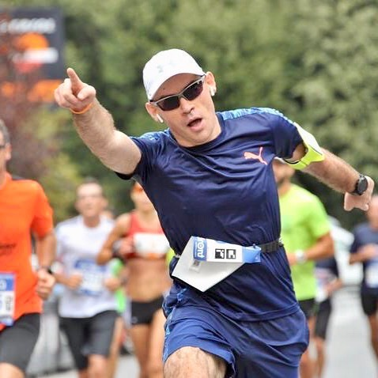
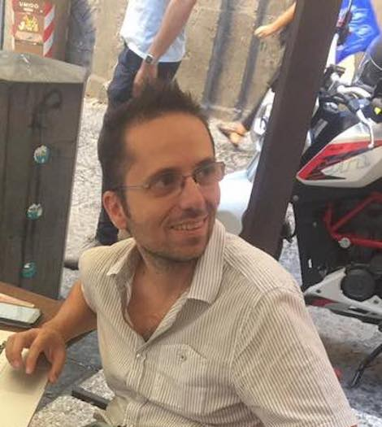
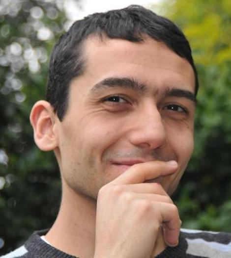
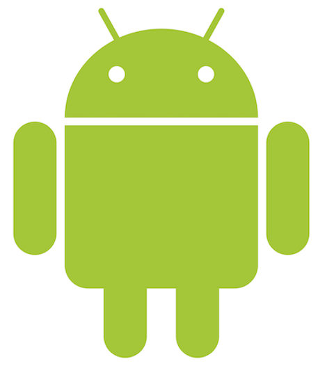

Kotlin Night Rome 2018
Per la prima volta in Italia ci sarà una intera "notte" dedicata a Kotlin. Dalle ore 19:00 ci saranno 4 talk dedicato al linguaggio per la Java Virtual Machineche sta stupendo tutti.
L'evento sarà totalmente gratuito e si svolgerà presso i locali di Luiss Enlabs in Via Marsala n.29/h all'interno della stazione di Roma Termini.
Programma dell'evento
-
18.45
Accoglienza ospiti
-

19.00
Presentazione evento
Innocenzo Sansone - Codemotion -

-

-
-

Gli speaker
Sede evento
Roma Termini, Via Marsala, 29/h
00185 Roma RM
L'evento si svolgerà nella sede di Luiss Enlabs all'interno della stazione di Roma Termini.
Partner dell'evento
L'evento è totalmente gratuito ed è stato possibile grazie al supporto di Codemotion e DevDay per l'organizzazione, di Luiss Enlabs per la sede dell'evento e degli speaker per la loro disponibilità.
L'immagine utilizzata è di Diliff - Opera propria, CC BY-SA 2.5